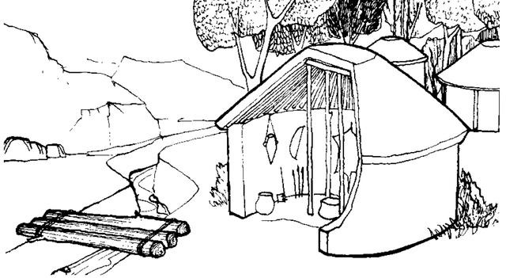

史前-商周 · 桥梁雏形
这一时期是中国古桥的起源阶段，先民为跨越溪流、沟壑，创造出最原始的桥梁形式——独木桥与浮桥。
独木桥由单根粗壮树干搭建，结构简单，仅能满足单人通行；浮桥则由竹筏、木筏拼接而成，漂浮于水面，
是最早的水上交通设施。此时的桥梁无固定造型，以实用为核心，为后世桥梁发展奠定了基础。
代表类型：独木桥 · 浮桥

时光渡口 · 桥脉千年
史前-商周
独木桥 · 浮桥
秦汉
石梁桥 · 木梁桥
隋唐
石拱桥 · 敞肩拱
宋元
跨海石桥 · 筏基
明清
廊桥 · 联拱桥